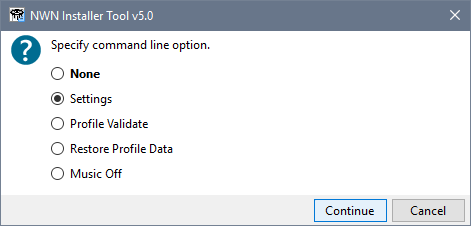
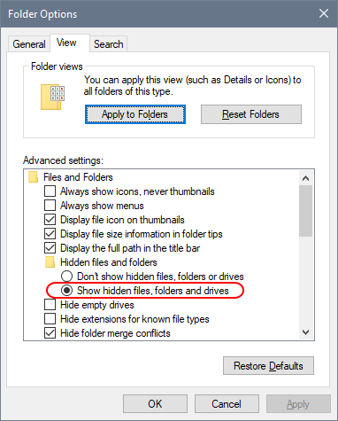
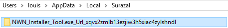
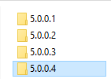

Restore or fix your Settings
Click NWN Installer Tool -Commands from the Windows Start Menu, select Settings and click Continue.

This displays your Settings information before the Installer Tool performs most of its start-up processing.
If you have saved your Settings using Export, then you can use Import to restore them.
You can also review the information on the Locations and Profiles pages to check that the information is still valid.
Remember to click Save when you Import or update your Settings to ensure they are applied.
Delete the User.Config file
If you are unable to restore or fix your Settings, use this procedure to delete your user.config file for the current version.
- Open Windows File Explorer.
- Ensure that hidden files are visible by clicking Options from the View tab.

- Open the Surazal folder in your AppData directory (you can paste C:\users\%USERNAME%\AppData\Local\Surazal into the File Explorer's address bar).

Locate the folder containing the version 5.0's configuration (it starts with NWN_Installer_Tool and not NWN_Mod_Installer_Tool, which is for version 4 and should not be changed).
- Open the folder and delete the last sub-folder in the list. If there is only one sub-folder, you should delete it.

- Try and start the Installer Tool and see if the problem has been resolved.
- You may need to re-apply your preferences once the Installer Tool has started successfully.
Related Topics
Customise the Installer Tool